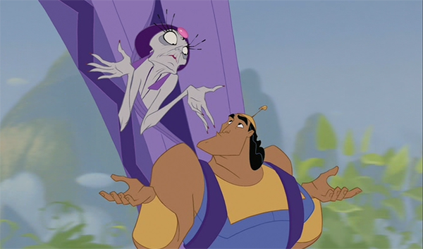

About Yzma and Kronk
Kronk starts as Yzma's loyal assistant, regardless of her constant abuse, helping her where she's too old or unwilling to do things herself.
Kronk giving Yzma a ride.
Yzma and Kronk's Characteristics
- Yzma would like a quick cup of coffee.
- Kronk makes good spinach puffs.
- Kronk has a great singing voice.
Yzma and Kronk's Crimes
Yzma and Kronk poisoned Kuzco with the intention of murdering Kuzco.Click on the links below to learn more.